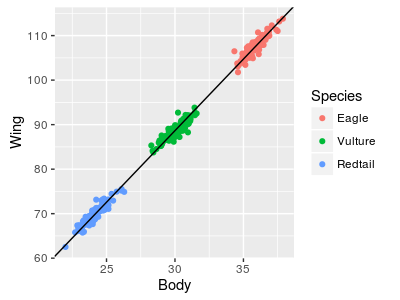

As you learned in last week's lecture, we can mix numeric and categorical predictors in a GLM. When we use a single numeric predictor and a single categorical predictor in a linear model we call it an "Analysis of Covariance", or ANCOVA.
We usually mix categorical and linear predictors for one of three reasons:
-
The regression is the scientifically important thing, but there is a grouping in the data that needs to be accounted for. We may need to account for a blocking variable (greenhouse, growth chamber), or a characteristic of our study organisms (species, sex, age class) that is best represented as a categorical variable.
-
Comparison among categorical treatment group levels is the scientifically important thing, but there is a continuous variable that adds noise to the data that needs to be statistically eliminated. Examples like this often use a measure of initial conditions as a covariate (e.g. initial bacterial density, initial weights of mice, etc.), which reduces statistical noise, and increases the effect size of the treatment.
-
Comparison among treatment group levels is the important thing, but we need to use a covariate to adjust the size of the difference between the means to obtain a more sensible comparison. In this application, we are focusing on the "signal" portion of the effect size. A classic example of this type of analysis is mass-adjusting some feature of interest.
The model that we would use is the same in all three cases - we would have a numeric response, explained by two predictors, one that is numeric, and another that is categorical. The only difference would be in the part of the results that we emphasize.
Our focus today will be on comparing the wingspans and body lengths of various species of birds of prey. We will be using ANCOVA in the third sense, as a way of adjusting the wingspan or body length means we want to compare between species to account for differences in overall body size.
|
You can see from the figure to the right that birds of prey differ in their wingspans. Bald Eagles have wingspans of 210 cm (just under 7 feet), and Cooper's Hawks have wingspans that are 76 cm (2.5 feet). But, why might two different species have different wingspans? Wingspan is an important part of a species' energy use during flight, and for its maneuverability. If we compared two birds with the same mass, longer wingspans are more efficient for gliding and soaring (non-flapping flight that uses wind currents and thermal updrafts to stay aloft), but shorter wings are better for maneuverability during powered flight. Given this, we could use the wingspan to make some predictions about how they hunt, what they eat, and how they get from place to place - provided the two species were the same mass. But, you can see from the figure that we aren't comparing species of the same body mass. Another reason that a bird might have a bigger wingspan is, simply, because it's a bigger bird. A Bald Eagle with the wing span of a Cooper's Hawk would probably not be able to get off the ground, and a Cooper's Hawk with the wingspan of a Bald Eagle wouldn't be able to get its wings folded against its body properly. |
We need to make the comparisons of wingspan in a way that accounts for the differences in body size.
|
It's possible that all of the birds are just the same basic model scaled to different sizes. The illustration to the right illustrates this possibility - the red-tailed hawk silhouette from the first figure is shown repeatedly at different levels of scaling, but without changing the proportional relationship between wingspan and body length. |
 |
|
If raptors were all just different magnifications of the same basic model, a regression of wing vs. body would look like the illustration to the right. A single line with a single intercept is fitted through three of the species, and it fits well. If we adjusted for body mass by calculating the wingspan of each species at the same mass, with just a single line they would all have the same mass-adjusted wingspans. So, what would a GLM that included body size and species as predictors show us? Body size is explaining the wingspan well, and we don't need lines with different intercepts to explain the scaling relationship. Adding species as a categorical predictor only helps if we need different intercepts, so adding species would not be expected to improve the fit - if we included species as a factor, it would probably not be significant as long as body size was also included. |
 |
|
But, if raptors aren't just different magnifications of the same basic model, we might expect a similar increase in wingspan with increasing body size, but each species might have a different baseline size depending on their flight characteristics. If this is true a set of parallel lines would describe the data well, and the vertical distance between the lines is a mass-adjusted measure of the amount of difference in wingspan. In this example, Red-tailed Hawks have a small wingspan for their body masses compared eagles, which are a little small for their size compared with vultures. A linear model that includes both species and body size would fit better here than one that only included body mass. We would expect both species and body mass to be significant if we included them both in the GLM. |
 |
So, for today, we will analyze the differences between these seven species of raptor in their mass-adjusted wingspans and body lengths. If we find that the species categorical variable is significant, then we'll conclude that the species are not just different scales of the same model, and that they have different shapes, and not just different sizes. We will also then base our comparisons among species on mass-adjusted values, which account for the difference in intercept for the species and allow us to make a more sensible comparison of wing and body shape that isn't confounded with differences in size of the animals.
Analyze size-corrected differences in wingspan and body length.
1. The data set you will analyze is here. Make a new project in R Studio called "ancova", and then download and import the data into a data set called "raptor.morph". Start a new script for your commands.
2. Now we are going to look at the data. I have some good news and some bad news.
The good news is that we will be switching away from the built-in graphics system that R provides (called "base graphics") to a contributed library called ggplot2 that is much more flexible. This is good news because ggplot2 makes very nice graphs (the graphs above are made with ggplot2), and because it's the graphics system that most R users are using.
The bad news is that it's very different from base graphics, and can be difficult to learn. But, the benefits are worth the pain, so here we go.
First you need to load the ggplot2 library:
library(ggplot2)
ggplot2 is based on something called the "grammar of graphics", which breaks graphs down into a series of components, and builds a completed graph from these components. There are global options that affect the entire graph that are specified with the ggplot() command, and then there are local options that pertain to just a portion of the graph that are set when you add components (geometric objects, called geom's) to the graph.
So, for example, our first step in graphing wing span against log mass, color-coded by species, is:
ws.gg <- ggplot(raptor.morph, aes(x = log.mass, y = WS, color = species))
This command sets some global properties for the graph - first, it identifies the data set to be used (raptor.morph), and then assigns "aesthetic mappings" with aes() that assign roles to variables. The role of the x-axis variable is assigned to log.mass, the role of the y-axis variable is assigned to wingspan (WS), and color coding is assigned to species. These settings are assigned to the object ws.gg.
Note that nothing has appeared in the Plots tab yet - even if you type ws.gg at the command line you will get a disappointingly empty set of axes. To get a scatter plot with points colored by species we have to add geometric objects to the plot. To do this, we will issue a command that starts with p, and then adds the geometric objects we want to it:
ws.gg + geom_point()
You should get a graph that has log.mass on the x-axis, WS on the y-axis, and a scatter of color-coded points for each species.
3. Fit a linear model, with wingspan as the response variable, and log.mass and species as the predictors (in that order). Call the model "ws.lm" (for "wingspan linear model"). Copy the usual output (coefficients, ANOVA table) to a Word document.
Fit a second model like the first, but with body length as the response variable, and call the model "len.lm". Copy the output to Word.
The next set of steps will involve using R commands, and working with some of R's data types. It will be helpful to know something about them, so read this section to familiarize yourself with the most commonly encountered R data types.
A few of R's data types
We have done quite a bit with R so far, but let's wrap up a few loose ends. R can be used as a calculator by typing calculations at the command prompt - if you wanted to add 2 and 3, you could use the command:
2 + 3
You can also make a "vector" that contains these numbers using the c() command (for "concatenate"). Using the command:
c(2,3)
gives you a vector with both data values that's reported on the screen, along with an "index" in square brackets for the first one in the row, like so:
[1] 2 3
You can assign a vector to an object, like so:
c(2,3) -> my.vector
Typing the name of the vector reports it on the screen. You can refer to an element in a vector using an index in square brackets. For example, typing:
my.vector[1]
returns the first element in your vector, which is the number 2. If you hit the up-arrow key to "recall" this last command, you can change the index to a 2, and that will return the second element in your vector, which is the number 3.
To sum 2 and 3, you can use the name of the vector as the argument for the sum() function:
sum(my.vector)
R can also do mathematical operations on vectors - if you wanted to add a 1 to each of the elements in my.vector, you could write:
my.vector + 1
which would give you:
[1] 3 4
Another data type that is very similar to a vector is a matrix - a vector is actually a special kind of matrix that only has a single row or a single column, whereas a matrix generally has at least two rows or two columns. To define a matrix, we use the matrix() function:
matrix(c(1,2,3,4))
which gives you a matrix with a single column, like so:
[,1]
[1,] 1
[2,] 2
[3,] 3
[4,] 4To get a matrix with two columns, you can use either:
matrix(c(1,2,3,4), nrow = 2)
or:
matrix(c(1,2,3,4), ncol = 2)
In either case you get a matrix:
[,1] [,2]
[1,] 1 3
[2,] 2 4You can see the elements get used in order to fill in one column, and then to fill in the next. To get the numbers to fill in by row instead, use:
matrix(c(1,2,3,4), nrow = 2, byrow = T) -> my.matrix
my.matrix
which gives you:
[,1] [,2]
[1,] 1 2
[2,] 3 4You can see that with two dimensions we get two sets of index numbers in square brackets, labeling the rows and the columns. We can use the index numbers to refer to the numbers in the matrix (called "elements") by row number, column number:
my.matrix[1,2]
gives you the element that's in the first row of the second column, which is a 2.
Vectors can hold other kinds of data, such as a "factor", which is a categorical variable made up of discrete levels:
colors <- factor(c("Blue","Red"))
colors
You'll see that the vector has two elements, each of which is one of the two levels that make up the variable "colors". The factor() function did the work of taking the words we entered, identifying the unique words to use as the levels, and then assigning a number to each element that corresponds with the factor level. We can get a list of the levels from this vector with the levels() command:
levels(colors)
Normally R substitutes the names of the levels for the numeric codes to make graphs and statistical output easier to understand, so you wouldn't see them, but there are several neat tricks we can use that make use of these underlying codes. We can see the numbers that correspond with the factor levels using:
unclass(colors)
This will give you the numbers assigned, followed by some "attribute" information, including the levels that you got from the levels() command.
We can combine these two vectors into a "data frame", which is the data structure that R uses for data sets - that is, data that can be organized as a series of rows and columns, with a mix of numeric columns and factors. The command:
data.frame(colors, my.vector) -> my.data.frame
makes a data frame using the two vectors, and assigns it to my.data.frame. If you type:
my.data.frame
at the command line, you'll see your two vectors are now columns in a data table.
You can refer to columns in a data frame by giving the name of the data frame, followed by a dollar sign, followed by the name of the column, like so:
my.data.frame$colors
You can also use row and column index numbers. To get the colors column by index, you would use:
my.data.frame[ , 1]
The first index before the comma is for the rows, and leaving it blank gives you all of the rows. If we just wanted to extract the second row of the colors column, we would use:
my.data.frame[2,1]
There are many R functions that we can use, and each requires input that is in a particular format. Vectors, matrices, and data frames are common data formats, which we will be seeing all semester long.
4. Now we are going to add the parallel regression lines to the graph so that you can visualize what the ANCOVA model looks like. Question 4 on your worksheet instructs you in calculating the regression equations for each species, you'll need to do that first. What this will entail is:
- Calculating the intercept for each species, based on the GLM coefficients.
- Adding a straight line to the graph for each species, using the same slope for every species, but with each species' intercept.
We need a data frame that looks like this:
species Intercepts
Slopes
coopers -440.6514 89.71353
eagle -553.8754 89.71353
harrier -438.0711 89.71353
osprey -475.5647 89.71353
peregrine -517.3271 89.71353
redtail -495.8122 89.71353
vulture -488.6329 89.71353
Each row is a species' regression equation, with a different intercept for every species, but the same slope - having the same slope makes them parallel lines. We'll plot each of the lines on the graph, so that it looks like this:

We're going to get this done using R commands. The instructions below are a set of steps needed to get from our fitted model to this table, with the R commands needed to do each step. This is the way to think about using R to solve problems - you should know where you're starting from, and where you want to get to, and then devise a series of steps that will get you there.
| The goal (and explanation) | The R command (enter at the command prompt,
>, in Rgui) |
|
A. Extract the coefficients from the fitted model. The coef() command extracts coefficients from a fitted model, and we are assigning them to the ws.coef object. Typing the name of the ws.coef object causes them to be shown on the screen. |
coef(ws.lm) -> ws.coef ws.coef |
|
B. Calculate the intercepts for each species. The coefficient labeled (Intercept) is the intercept for the "baseline" species, which is the Cooper's Hawk in this case (it's the first one alphabetically, and it's the one without a dummy-code column in the output). The rest of the intercepts are obtained by adding each species' dummy-code slope coefficient to the (Intercept) term. The coefficients in ws.coef can be referred to by number - from left to right, (Intercept) is number 1, log.mass (slope) is number 2, the specieseagle dummy coded slope coefficient is number 3, and so forth. We can use this index number to extract a coefficient from the ws.coef object - ws.coef[3] would extract the third coefficient from ws.coef. We can ask for more than one coefficient with a range of numbers - ws.coef[3:8] gives us coefficients 3 through 8. |
|
|
Add the (Intercept) to each of the species dummy codes. This command takes the first coefficient in ws.coef (which is the Cooper's Hawk intercept) and adds it to the dummy coded slopes for the rest of the species to get their intercepts. These are assigned to a temporary object, ints.temp. |
ws.coef[1] + ws.coef[3:8] -> ints.temp |
| Now put the Cooper's Hawk intercept into the set of intercepts for all species. The c() function concatenates (that is, puts together) the (Intercept) coefficient from ws.coef with the intercepts in ints.temp, and assigns the whole set to ints. The ints object now has the intercepts for all of the species, including Cooper's Hawks. | c(ws.coef[1], ints.temp) -> ints |
|
C. Make the table, with a column for Intercepts and a column for Slopes. Now we make a data frame, with columns for species names, intercepts (which uses ints as its data), and slopes (which uses the slope coefficient from ws.coef as its data). You'll see that since we're using the same slope for every row we only need to identify a single value (ws.coef[2]), and it will be repeated for the rest of the rows in the data frame. The table is assigned to the object eqns.ws. Typing its name shows you the content. |
data.frame(species = levels(factor(raptor.morph$species)), intercepts = ints, slopes = ws.coef[2]) -> eqns.ws eqns.ws |
|
D. Delete the confusing row names. Row names are currently set to the names of coefficients. We could set them to species names, but we have a species column instead, so we'll just delete the row names. |
row.names(eqns.ws) <- NULL eqns.ws |
|
E. Add parallel lines to the graph. We can return to ws.gg and in addition to adding points to the graph we can add lines that have the same colors as the points, using the slopes and intercepts for each species. The command for adding lines using slopes and intercepts to a ggplot is geom_abline(). Since the slopes and intercepts are in a different data frame we need to identify which one we're using (eqns.ws), and then use an aes() statement to use the slopes column for each slope, and the intercepts column for each intercept. Using the species column to assign colors takes care of matching the color of the line to the color of the points. |
ws.gg + geom_point() +
geom_abline(data = eqns.ws, aes(slope = slopes, intercept =
intercepts, color = species)) |
Now, switch to the scatterplot of body length vs. log.mass and add parallel lines - you will need to repeat the set of steps above, but this time using body length coefficients. Be sure to change names to len instead of ws as needed to avoid over-writing your wingspan data with body length data.
5. You have at this point conducted the omnibus test for significance, but haven't determined which raptors differ in size-adjusted wingspan; you need to do some post-hocs to find this out. Load the multcomp package, and type the following command:
ws.tukey <- glht(ws.lm, linfct = mcp(species = "Tukey"))
Then, to get your Tukey tests, type into the script window:
summary(ws.tukey)
6. Repeat the steps in 5 for body length.
Plot the effect of Species, once mass has been accounted for, and obtain least squares means.
1. There isn't a "least squares means" command in R, but we can get them in a couple of different ways. The first way is to use the "effects" package. Load the library with the command:
library(effects)
and then issue the command:
effect("species", ws.lm)
to see the size-adjusted means. The values are the mean predicted wing span calculated at the average log.mass. To get a nicely formatted table reported, use the command:
as.data.frame("species", ws.lm)
This will give you least squares means for each of the species, as well as standard errors of the fits, and lower and upper limits of the 95% confidence intervals around them in the output window. The least squares means are in the column "fit".
2. Now we need to add a vertical line at the mean of log.mass - this is where the least squares means are calculated, so the points at which the regression lines for each species cross this vertical line are the least squares mean. The mean of log.mass is:
mean(raptor.morph$log.mass)
Switch to the wing span plot, and
then add this as a vertical line with:
ws.gg +
geom_point() + geom_abline(data = eqns.ws, aes(slope = slopes,
intercept = intercepts, color = species)) + geom_vline(xintercept =
6.969)
using the actual mean of log.mass in the abline() command. The "v" in the abline() command stands for "vertical line". Where this vertical line intersects each of the species regression lines is the least squares mean wingspan for that species.
Repeat these steps to get the least squares means for body length as well, and add a vertical line at the mean of log.body to the body length plot.
3. Obtain a table of raw means to compare with these least squares means using the summarySE() function we used in previous activities.
5. Optional - R skills to show and tell
In order to obtain least-squares means for each species, it was necessary for the effect() function to specify a mean for log.mass to be used for every species. Since this analysis is fitting parallel lines through the data, with a different intercept for each species but a single common slope, the log.mass used won't affect the amount of difference between the least squares means. It makes sense that effect() would use the mean of the covariate, both to put the least squares means in the middle of the data, and to take advantage of the fact that the standard errors around regression lines are smallest in the middle of the x-data. But, we don't have to assume, we can confirm that this is true.
You can confirm that effect() uses the mean body mass for the least squares means by using the predict() command. This function will take a data set that you create that has the list of species in one column, and another column with the mean of log.mass, and then predict the wingspan for each species. The column names need to be the same as the variables used in the model, but not every variable in the original data set needs to be present; for example, we don't need to include wingspan (the response) or body length (not included in the model), only species and log.mass.
To make the data set for prediction, use the command:
data.frame(species = levels(raptor.morph$species), log.mass = mean(raptor.morph$log.mass)) -> for.predict ; for.predict
This command makes a data frame with two columns, species and log.mass.
- The species column is created from the levels found in your raptor.morph species column - the levels() command gives a list of the factor names found in the species column of the raptor.morph data set. By using "species = levels(raptor.morph$species)" we are simultaneously creating a column called species, and assigning the species names to it as values.
- The log.mass column is created by taking the mean of log.mass from raptor.morph, and this single value is repeated for each raptor. The variable named log.mass is created, and then the mean of the log.masses in raptor.morph are assigned in one statement.
- The data frame is assigned to an object called for.predict, and then it's shown on the screen by entering the name for.predict as a second command, after the semicolon.
Next, we can use this for.predict object, along with the fitted model, to predict the wingspans for each species at the mean log.mass:
predict(ws.lm, for.predict)
The predict() command uses the coefficients in the fitted model ws.lm, and applies them to for.predict to come up with our least squares means for each species, at the mean of log.mass.
To get a table that includes standard errors, use:
data.frame(predict(ws.lm, for.predict, se = T))
The output doesn't include the species names, but they are the same (alphabetical) order as in for.predict. If you want to get them labeled on the screen, you can add them with:
data.frame(species = for.predict$species, predict(ws.lm, for.predict, se = T))
These least squares means should match those you got from effect().
Why not use the easy way?
After all of of this effort to make mass-adjusted comparisons between species, you may be wondering, why didn't we standardize the data by just dividing wingspan or body length by the log.mass of the bird? This would express the data as a set of wingspans per unit masses that would be comparable between the species, so why bother with all these ANCOVA, least squares means shenanigans?
We could, of course, have standardized by dividing wingspan or body length by log body mass, but there is reason to think doing so would have been a bad idea.
If you divide the mean wingspan of each species by the mean body mass, you are calculating a slope of a line, with the change in wingspan in the numerator being (xws - 0), and the change in log mass in the denominator being (xlog.mass - 0).
If the ratio of mean wingspan to mean log body mass is a slope, what's the intercept? If you wanted to predict the mean wingspan of a species from this slope we would multiply by the mean log body mass - that is: (mean wingspan/mean body mass) x mean body mass = mean wingspan. We got the right answer without having to add an intercept, which means that the intercept is zero.
We could think of this standardization, then, as fitting models in which the regression equations are:
coopers: WS = 13.2 (log.mass)
eagle: WS = 24.6 (log.mass)
harrier: WS = 17.8 (log.mass)
osprey: WS = 24.7 (log.mass)
peregrine: WS = 14.6 (log.mass)
redtail: WS = 17.8 (log.mass)
vulture: WS = 23.1 (log.mass)
The slopes for all of these equations are mean wingspan divided by mean log.mass for each species. So, if we did use the WS/log.mass ratios to compare the species, we would be comparing the slopes of lines instead of intercepts. The scaling relationship between wingspan and log body mass is the slope, so we would be hypothesizing that the scaling relationship is different between the species, rather than hypothesizing a single, common scaling relationship with different intercepts.
But why not do this?
 |
The graph on the left shows each of the equations running through the data set we used today - as you can see, these models don't fit the data well. If we wanted to adjust to a common body mass, we could predict the wingspans at the same log.mass, like the vertical line at log.mass of 1. The predicted values at log.mass = 1 is equal to the slopes of the lines (plug in 1 for each log mass in the equations above and you get the slopes). So, the slopes are in fact mass-adjusted values, which can be compared between species of different mass, but they make their mass adjustment with models that fit our data poorly. |
|
The reason this simple scaling method didn't work is that the relationship between wingspan and log.mass is not the same for all log.masses. For example, if we predict the wingspan for eagles using the equation WS = -53.8 + 89.7 * log.mass, a small eagle with a log.mass of 8.355 has a predicted wingspan of 195.64. If we divide the predicted wingspan by the bird's log.mass, we get 23.42. A big eagle with a log.mass of 8.688 has a predicted wingspan of 225.51. If we divide by this bird's log.mass we get 25.96, which is not the same as 23.42. Since the WS/log.mass isn't the same for eagles of all sizes,
the relationship is called "allometric". We can identify
allometric relationships from an ANCOVA if we have intercepts
that are not all equal to 0. |
|
| So, what would the relationship need to look like for
WS/log.mass to be comparable between species? If the ratio of wingspan to log.mass was the same for all log.masses, then the relationship would be "isometric", and we could divide wingspan by log.mass as a way of making comparisons between the species. Isometric relationships look like the graph on the left - regressions with different slopes and zero as their intercepts fit the data well, with the data points lining up along the lines. |
When you have an allometric scaling relationship between variables it is not accurate to standardize by dividing the mean of one variable by the mean of the other, because standardizing with a model that doesn't fit the data doesn't work. With an allometric relationship in which ANCOVA fits the data, least squares means are the correct standardization.
That's it! You can upload your R stuff to the class web site, and answer the questions on your worksheet.